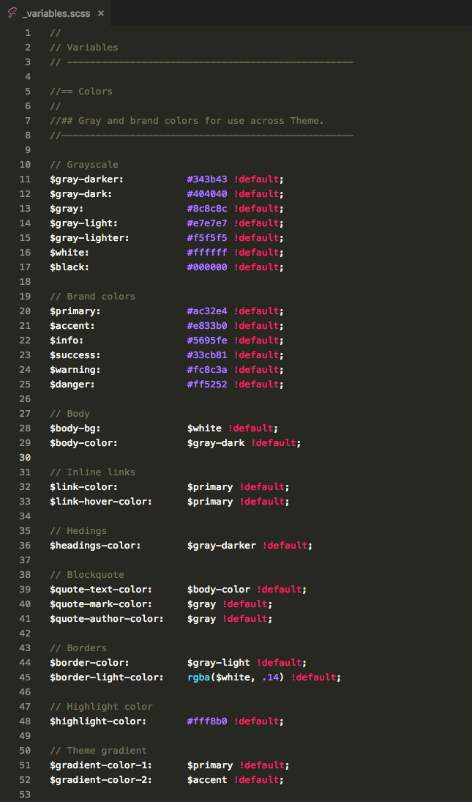

Docs
There are 2 options to customize CreateX global colors:
In case you want to create your own color scheme - the fastest and painless way to do that is via Sass variables.
Simply copy necessary variable from Createx/src/scss/theme/helpers/_variables.scss file and paste to Createx/src/scss/_user-variables.scss, then compile new theme.min.css file either using Prepross or Gulp. Check Using Preprocessors and Working with Gulp sections for instructions.
Blelow is the screenshot of the part of Sass variables file responsible for global colors:
This is the hardest way to do things done. I don't recommend it but if you prefer vanilla CSS you can replace all color hex values inside Createx/dist/css/theme.min.css with your own using "find and replace" panel of you code editor. Refer to the image above as a guidance.